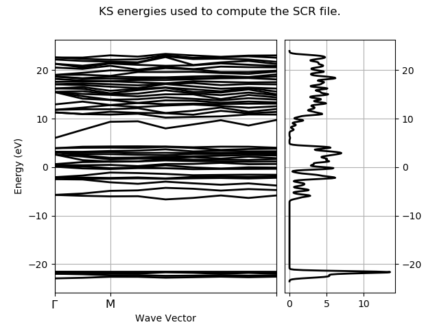
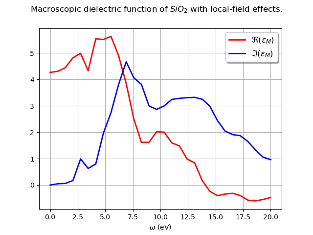
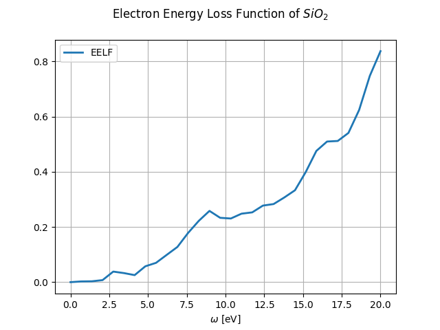

<!DOCTYPE html>

<html xmlns="http://www.w3.org/1999/xhtml">
  <head>
    <meta http-equiv="Content-Type" content="text/html; charset=utf-8" />
    <title>Dielectric function with LFE &#8212; abipy 0.6.0 documentation</title>
    <link rel="stylesheet" href="../_static/bootstrap-sphinx.css" type="text/css" />
    <link rel="stylesheet" href="../_static/pygments.css" type="text/css" />
    <link rel="stylesheet" href="../_static/gallery.css" type="text/css" />
    <link rel="stylesheet" href="../_static/my_style.css" type="text/css" />
    <script type="text/javascript">
      var DOCUMENTATION_OPTIONS = {
        URL_ROOT:    '../',
        VERSION:     '0.6.0',
        COLLAPSE_INDEX: false,
        FILE_SUFFIX: '.html',
        HAS_SOURCE:  true,
        SOURCELINK_SUFFIX: '.txt'
      };
    </script>
    <script type="text/javascript" src="../_static/jquery.js"></script>
    <script type="text/javascript" src="../_static/underscore.js"></script>
    <script type="text/javascript" src="../_static/doctools.js"></script>
    <script type="text/javascript" src="https://cdnjs.cloudflare.com/ajax/libs/mathjax/2.7.1/MathJax.js?config=TeX-AMS-MML_HTMLorMML"></script>
    <script type="text/javascript" src="../_static/js/jquery-1.11.0.min.js"></script>
    <script type="text/javascript" src="../_static/js/jquery-fix.js"></script>
    <script type="text/javascript" src="../_static/bootstrap-3.3.7/js/bootstrap.min.js"></script>
    <script type="text/javascript" src="../_static/bootstrap-sphinx.js"></script>
    <link rel="index" title="Index" href="../genindex.html" />
    <link rel="search" title="Search" href="../search.html" />
    <link rel="next" title="Lobster COHP/COP/DOS" href="plot_lobster_files.html" />
    <link rel="prev" title="MgB2 Fermi surface" href="plot_fermisurface.html" />
<meta charset='utf-8'>
<meta http-equiv='X-UA-Compatible' content='IE=edge,chrome=1'>
<meta name='viewport' content='width=device-width, initial-scale=1.0, maximum-scale=1'>
<meta name="apple-mobile-web-app-capable" content="yes">

  </head>
  <body>

  <div id="navbar" class="navbar navbar-default navbar-fixed-top">
    <div class="container">
      <div class="navbar-header">
        <!-- .btn-navbar is used as the toggle for collapsed navbar content -->
        <button type="button" class="navbar-toggle" data-toggle="collapse" data-target=".nav-collapse">
          <span class="icon-bar"></span>
          <span class="icon-bar"></span>
          <span class="icon-bar"></span>
        </button>
        <a class="navbar-brand" href="../index.html">
          abipy</a>
        <span class="navbar-text navbar-version pull-left"><b>0.6.0</b></span>
      </div>

        <div class="collapse navbar-collapse nav-collapse">
          <ul class="nav navbar-nav">
            
            
              <li class="dropdown globaltoc-container">
  <a role="button"
     id="dLabelGlobalToc"
     data-toggle="dropdown"
     data-target="#"
     href="../index.html">Site <b class="caret"></b></a>
  <ul class="dropdown-menu globaltoc"
      role="menu"
      aria-labelledby="dLabelGlobalToc"><ul>
<li class="toctree-l1"><a class="reference internal" href="../features.html">Overview</a></li>
<li class="toctree-l1"><a class="reference internal" href="../installation.html">Getting AbiPy</a></li>
<li class="toctree-l1"><a class="reference internal" href="../changelog.html">Changelog</a></li>
<li class="toctree-l1"><a class="reference internal" href="../zzbiblio.html">Bibliography</a></li>
</ul>
<ul class="current">
<li class="toctree-l1"><a class="reference internal" href="../scripts/index.html">Scripts</a></li>
<li class="toctree-l1 current"><a class="reference internal" href="index.html">AbiPy Gallery</a></li>
<li class="toctree-l1"><a class="reference internal" href="../postprocessing_howto.html">Post-processing How-To</a></li>
</ul>
<ul>
<li class="toctree-l1"><a class="reference internal" href="../workflows/taskmanager.html">TaskManager</a></li>
<li class="toctree-l1"><a class="reference internal" href="../workflows/manager_examples.html">Manager Examples</a></li>
<li class="toctree-l1"><a class="reference internal" href="../flow_gallery/index.html">Flow Gallery</a></li>
<li class="toctree-l1"><a class="reference internal" href="../flows_howto.html">Flows How-To</a></li>
</ul>
<ul>
<li class="toctree-l1"><a class="reference internal" href="../api/index.html">API documentation</a></li>
<li class="toctree-l1"><a class="reference internal" href="../coding_guide.html">Coding guide</a></li>
<li class="toctree-l1"><a class="reference internal" href="../README.html">Documenting AbiPy</a></li>
</ul>
</ul>
</li>
              
                <li class="dropdown">
  <a role="button"
     id="dLabelLocalToc"
     data-toggle="dropdown"
     data-target="#"
     href="#">Page <b class="caret"></b></a>
  <ul class="dropdown-menu localtoc"
      role="menu"
      aria-labelledby="dLabelLocalToc"><ul>
<li><a class="reference internal" href="#">Dielectric function with LFE</a></li>
</ul>
</ul>
</li>
              
            
            
              
                
  <li>
    <a href="plot_fermisurface.html" title="Previous Chapter: MgB2 Fermi surface"><span class="glyphicon glyphicon-chevron-left visible-sm"></span><span class="hidden-sm hidden-tablet">&laquo; MgB2 Fermi surface</span>
    </a>
  </li>
  <li>
    <a href="plot_lobster_files.html" title="Next Chapter: Lobster COHP/COP/DOS"><span class="glyphicon glyphicon-chevron-right visible-sm"></span><span class="hidden-sm hidden-tablet">Lobster COHP/COP/DOS &raquo;</span>
    </a>
  </li>
              
            
            
            
            
              <li class="hidden-sm">
<div id="sourcelink">
  <a href="../_sources/gallery/plot_scr.rst.txt"
     rel="nofollow">Source</a>
</div></li>
            
          </ul>

          
            
<form class="navbar-form navbar-right" action="../search.html" method="get">
 <div class="form-group">
  <input type="text" name="q" class="form-control" placeholder="Search" />
 </div>
  <input type="hidden" name="check_keywords" value="yes" />
  <input type="hidden" name="area" value="default" />
</form>
          
        </div>
    </div>
  </div>

<div class="container">
  <div class="row">
    <div class="col-md-12 content">
      
  <div class="sphx-glr-download-link-note admonition note">
<p class="first admonition-title">Note</p>
<p class="last">Click <a class="reference internal" href="#sphx-glr-download-gallery-plot-scr-py"><span class="std std-ref">here</span></a> to download the full example code</p>
</div>
<div class="sphx-glr-example-title section" id="dielectric-function-with-lfe">
<span id="sphx-glr-gallery-plot-scr-py"></span><h1>Dielectric function with LFE<a class="headerlink" href="#dielectric-function-with-lfe" title="Permalink to this headline">¶</a></h1>
<p>This examples shows how to plot the macroscopic dielectric function
computed in the GW code (optdriver 3)</p>
<ul class="sphx-glr-horizontal">
<li>
</li>
<li>
</li>
<li>
</li>
</ul>
<p class="sphx-glr-script-out">Out:</p>
<div class="sphx-glr-script-out highlight-none"><div class="highlight"><pre><span></span>================================= File Info =================================
Name: sio2_SCR.nc
Directory: /Users/gmatteo/git_repos/abipy/abipy/data/refs/sio2_screening
Size: 426.16 kb
Access Time: Tue Aug 21 23:52:22 2018
Modification Time: Thu Feb 22 21:38:00 2018
Change Time: Thu Feb 22 21:38:00 2018

================================= Structure =================================
Full Formula (Si3 O6)
Reduced Formula: SiO2
abc   :   4.913040   4.913040   5.404630
angles:  90.000000  90.000000 120.000000
Sites (9)
  #  SP         a       b          c
---  ----  ------  ------  ---------
  0  Si     0.465   0       0
  1  Si     0       0.465   0.666667
  2  Si    -0.465  -0.465   0.333333
  3  O      0.415   0.272   0.12
  4  O     -0.143  -0.415   0.453333
  5  O     -0.272   0.143   0.786667
  6  O      0.143  -0.272  -0.12
  7  O      0.272   0.415   0.546667
  8  O     -0.415  -0.143   0.213333

Abinit Spacegroup: spgid: 0, num_spatial_symmetries: 6, has_timerev: True, symmorphic: True

====================== K-points for screening function ======================
0) [+0.000, +0.000, +0.000], weight: 0.000
1) [+0.250, +0.000, +0.000], weight: 0.000
2) [+0.500, +0.000, +0.000], weight: 0.000
3) [+0.250, +0.250, +0.000], weight: 0.000
4) [+0.000, +0.000, +0.333], weight: 0.000
5) [+0.250, +0.000, +0.333], weight: 0.000
6) [+0.500, +0.000, +0.333], weight: 0.000
7) [-0.250, +0.000, +0.333], weight: 0.000
8) [+0.250, +0.250, +0.333], weight: 0.000

Number of G-vectors in screening matrices: 9
Number of frequencies: 35 (real: 30, imaginary: 5)
Setting Fermi energy to zero since `fermie_energy` is not initialized in Abinit v8.2
</pre></div>
</div>
<div class="line-block">
<div class="line"><br /></div>
</div>
<div class="highlight-python"><div class="highlight"><pre><span></span><span class="kn">import</span> <span class="nn">abipy.data</span> <span class="kn">as</span> <span class="nn">abidata</span>
<span class="kn">from</span> <span class="nn">abipy.abilab</span> <span class="kn">import</span> <span class="n">abiopen</span>

<span class="k">with</span> <span class="n">abiopen</span><span class="p">(</span><span class="n">abidata</span><span class="o">.</span><span class="n">ref_file</span><span class="p">(</span><span class="s2">&quot;sio2_SCR.nc&quot;</span><span class="p">))</span> <span class="k">as</span> <span class="n">ncfile</span><span class="p">:</span>
    <span class="c1"># The SCR file contains a structure and electron bands in the IBZ.</span>
    <span class="c1"># We can thus use the ebands object to plot bands + DOS.</span>
    <span class="k">print</span><span class="p">(</span><span class="n">ncfile</span><span class="p">)</span>

    <span class="n">edos</span> <span class="o">=</span> <span class="n">ncfile</span><span class="o">.</span><span class="n">ebands</span><span class="o">.</span><span class="n">get_edos</span><span class="p">()</span>
    <span class="n">ncfile</span><span class="o">.</span><span class="n">ebands</span><span class="o">.</span><span class="n">plot_with_edos</span><span class="p">(</span><span class="n">edos</span><span class="p">,</span> <span class="n">title</span><span class="o">=</span><span class="s2">&quot;KS energies used to compute the SCR file.&quot;</span><span class="p">)</span>

    <span class="c1"># sphinx_gallery_thumbnail_number = 2</span>
    <span class="n">ncfile</span><span class="o">.</span><span class="n">plot_emacro</span><span class="p">(</span><span class="n">title</span><span class="o">=</span><span class="s2">&quot;Macroscopic dielectric function of $SiO_2$ with local-field effects.&quot;</span><span class="p">)</span>

    <span class="n">ncfile</span><span class="o">.</span><span class="n">plot_eelf</span><span class="p">(</span><span class="n">title</span><span class="o">=</span><span class="s2">&quot;Electron Energy Loss Function of $SiO_2$&quot;</span><span class="p">)</span>
</pre></div>
</div>
<p><strong>Total running time of the script:</strong> ( 0 minutes  0.437 seconds)</p>
<div class="sphx-glr-footer class sphx-glr-footer-example docutils container" id="sphx-glr-download-gallery-plot-scr-py">
<div class="sphx-glr-download docutils container">
<a class="reference download internal" href="../_downloads/plot_scr.py" download=""><code class="xref download docutils literal"><span class="pre">Download</span> <span class="pre">Python</span> <span class="pre">source</span> <span class="pre">code:</span> <span class="pre">plot_scr.py</span></code></a></div>
<div class="sphx-glr-download docutils container">
<a class="reference download internal" href="../_downloads/plot_scr.ipynb" download=""><code class="xref download docutils literal"><span class="pre">Download</span> <span class="pre">Jupyter</span> <span class="pre">notebook:</span> <span class="pre">plot_scr.ipynb</span></code></a></div>
</div>
<p class="sphx-glr-signature"><a class="reference external" href="https://sphinx-gallery.readthedocs.io">Gallery generated by Sphinx-Gallery</a></p>
</div>


    </div>
      
  </div>
</div>
<footer class="footer">
  <div class="container">
    <p class="pull-right">
      <a href="#">Back to top</a>
      
    </p>
    <p>
        &copy; Copyright 2018, M. Giantomassi and the AbiPy group.<br/>
      Last updated on Aug 22, 2018.<br/>
      Created using <a href="http://sphinx-doc.org/">Sphinx</a> 1.6.5.<br/>
    </p>
  </div>
</footer>
  </body>
</html>